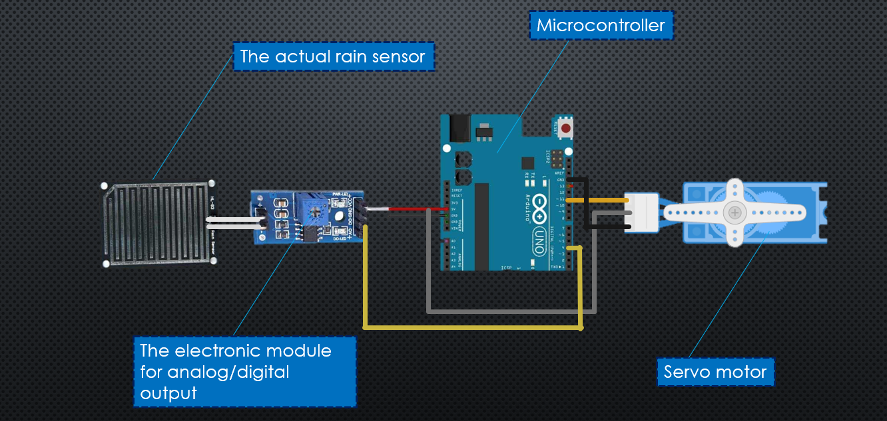
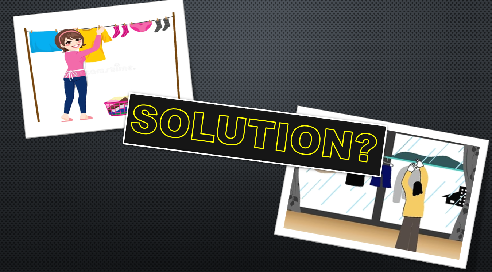

#include <Servo.h>
Servo myServo;
int rainPin = 2;
int servoPin = 9;
void setup() {
pinMode(rainPin, INPUT);
myServo.attach(servoPin);
}
void loop() {
int value = digitalRead(rainPin);
if (value == LOW) {
myServo.write(0);
} else {
myServo.write(90);
}
}